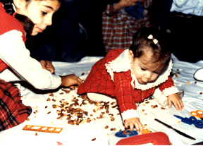

Adamnahadigi Araro.ov;ivnu
Yrp yryqan %6^ amsagan e ta-novm ajovm ov tovrs yn calis nra a-a]in adamnyru5 orbes ovraqov;yan n,an nra ma3ru azcagannyru havakvovm yn ¦ 3adovg hantisov;ivn yn gadarovm5 oru go[vovm e ADAMAHADIGI ARARO>OV:IVN1
A3s a-;iv naqabes yryqa3i ma3ru osb5 haxahadignyr5 xoryn5 sisy-5 [ami[5 manr ka.xry.ennyr5 ¦ nman [ory.ennyr yn havakovm ov tnovm ;o-i me]5 3ydo3 tranxix mi ki[ wyrxnylow ,a. yn dalis yryqa3i clqi wra31Yryqa3i a-]¦ ,arovm yn zanazan iryr1 A3t iryrix yn` cri[u5 madidu5 mgradru5 ;yln ov asy.u a3ln1
|  |
Henx or yraqan wyrxnovm gam 2y-k e yrgarovm ir a-]¦ ,ara/ iryrix a-a]inin5 asovm yn ipr¦ ;e a3t yryqan linylov e dovyal irin gab ovnyxo. an2 gam masnaced1 )rinag5 asovm yn5 ;e cri[ wyrxno.u linylov e craced5 isg madid werxno.u` ngari[1 :vovm e5 ;e yryqa3i a-a] trovo. iryru a3s 0ryrin5 yrp zarcaxyl e jardaracidov;ivnu5 bedk e hamagarc[i nman nor iryr ,aryl dysnyl5 ;e na a3sovhyd i|n[ e ta-nalov 7771
<amlyan Azca3in War=arani U7 Aryvylaha3 tasaran
Arsine Ananyanu
Marlina Sahagyanu
S0se Mo.o3yanu
Liana A.a]anyanu
(Wyratar2i4r n,ylow P7 @y-nargi n,anu)